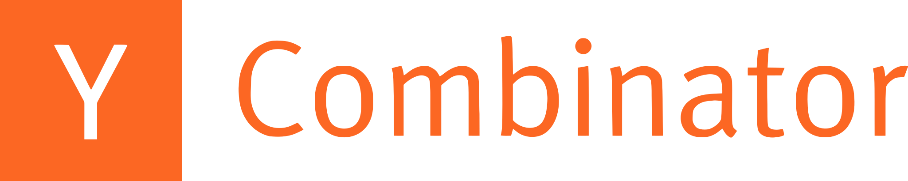

Alexandre DO-O ALMEIDA
Lead Software Engineer · IA
Profil
10 ans en développement logiciel : Jam.gg (YC S20) porté à 2 M d’utilisateurs, IA livrée à 50 000 étudiants, tests PlayStation automatisés sur 5 000+ jeux. J’orchestre des agents Codex et Claude Code pour coder, tester et relire en autonomie, en gardant la maîtrise de l’architecture et de la qualité des livraisons.
148 Md+ tokens · 17e au classement mondial sur VibeRank en septembre 2026
Expérience professionnelle

Lead Software Engineer · IA
Studi · Galileo Global Education
Avr. 2026 - Présent
- Livraison en production d’un assistant pédagogique RAG pour 50 000 étudiants : LLM, LangChain et Langfuse pour la recherche documentaire, l’évaluation et l’observabilité.
- Pilotage de la R&D et de la transformation technique en lien direct avec le CEO (entreprise de 800 salariés).
- Pilotage de la refonte complète du LMS et d’une plateforme de visioconférence : architecture et accompagnement des développeurs, de l’implémentation à la livraison.
Ingénieur DevOps / Responsable infrastructure de tests
Sony Interactive Entertainment · PlayStation
Fév. 2023 - Mars 2026
- Conception de la CI/CD et des tests automatisés d’émulateurs PlayStation avec Python, GitHub Actions et AWS : 5 000+ jeux sur kits de développement console et environnements d’exécution.
- Fiabilisation des sorties de 50+ PlayStation Classics sur PS4/PS5, pour des millions de joueurs ; maintenance des pipelines utilisés par 15+ ingénieurs. Mission réalisée via Implicit Conversions.
Ingénieur fondateur / Responsable Produit & QA
Jam.gg · anciennement Piepacker · 
Mars 2020 - Mars 2023
- Membre de l’équipe fondatrice d’une plateforme de cloud gaming portée à 2 M d’utilisateurs et 500 000 actifs mensuels, avec une levée de 12 M$ en série A.
- Développement backend, frontend et cloud avec Go, TypeScript, React, Firebase et GCP : intégrations Discord/Twitch, streaming dans le navigateur et gestion du catalogue de jeux.
- Création et direction des équipes Produit et QA ; contribution aux 30 premiers recrutements, jusqu’à une équipe de 60+ collaborateurs.
Lead IA & IoT / Ingénieur backend · Atos. Encadrement de 6 développeurs en maintenance prédictive sur Azure ; géolocalisation en Java pour l’Armée de terre.
2018 - 2020Ingénieur R&D · Airbus Helicopters. Simulateurs VR/AR sous Unity pour former les techniciens (Vive, HoloLens) ; développement backend Java du logiciel de documentation des hélicoptères via Reactis.
2016 - 2018
Stage en bioinformatique · CNRS. Extension d’outils Java : structures génomiques, alignement de séquences et visualisation phylogénétique.
2016Formation
Master en Data Science & Software Engineering
Ingesup / Aix Ynov Campus
2016-2019
Licence en biologie cellulaire et moléculaire
Aix-Marseille Université
2013-2016
Compétences techniques
- Langages & frameworks
- Go · TypeScript · React · Python · Java · SQL · Rust · C++ · C# · WebAssembly
- IA & agents
- Orchestration multi-agents · Codex · Claude Code · RAG · LangChain · Langfuse · Évaluation IA
- Cloud & infrastructure
- Infrastructure as Code · GCP · AWS · Firebase · Docker · Kubernetes · GitHub Actions · CI/CD
Français : langue maternelle · Anglais : maîtrise professionnelle, TOEIC 990/990